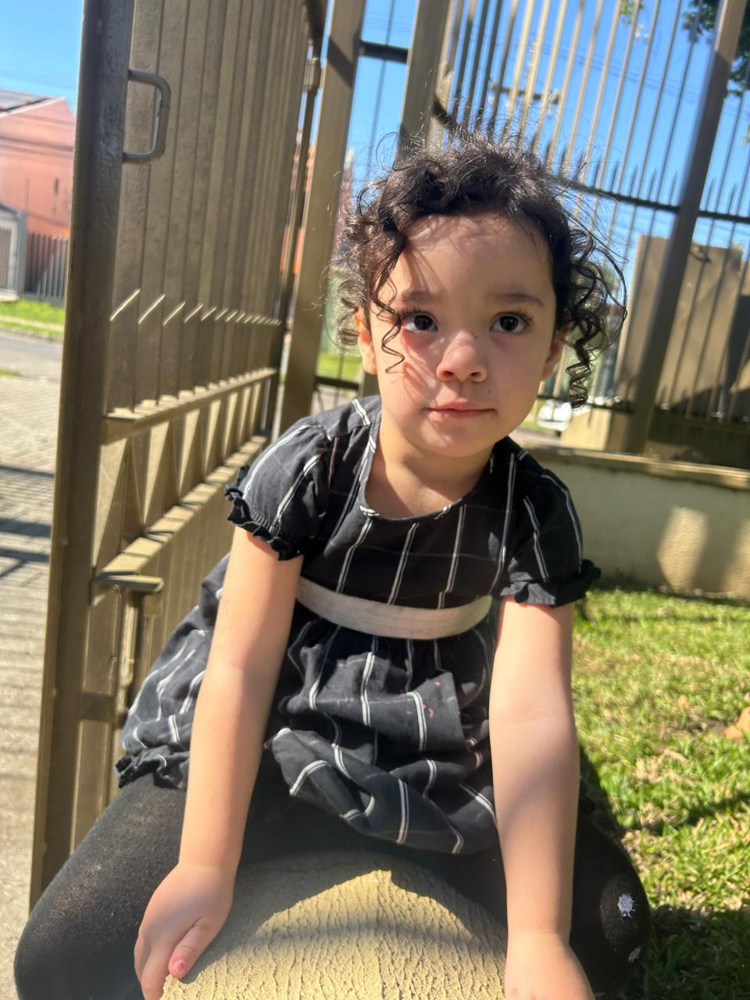
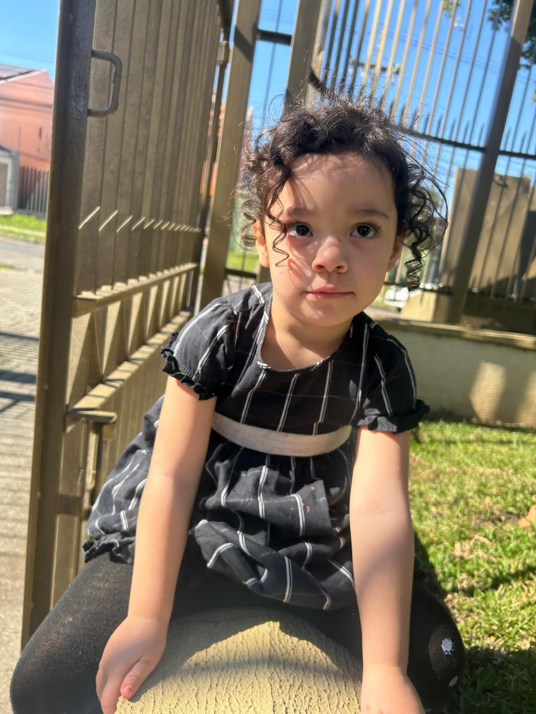

Family Memories - History of a Wonderful Life
This site presents a simple and beautiful way for you and your family to store photos and stories of a wonderful life.
Are you tired of when you have a visitor, having to grab a family album from the dusty closet?
Would you like to have all your photos and stories of your photos kept in a secure place that will not be erased over time?
The "Family Memories" website is designed to serve as a digital space where families can showcase and preserve their cherished memories. It features an interactive photo carousel displaying family photos with captions, allowing users to reminisce about past events like reunions, vacations, and celebrations. Additionally, users can easily upload new photos, add captions, and search for images by date, making it a dynamic and personalized platform for keeping family memories organized and accessible across all devices.


 

Photo 1 - My picture before my mission - 2003